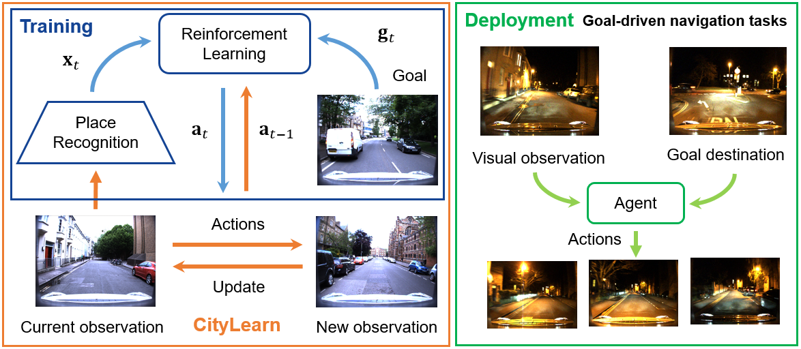
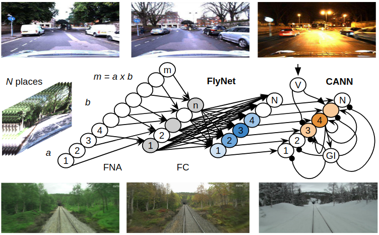
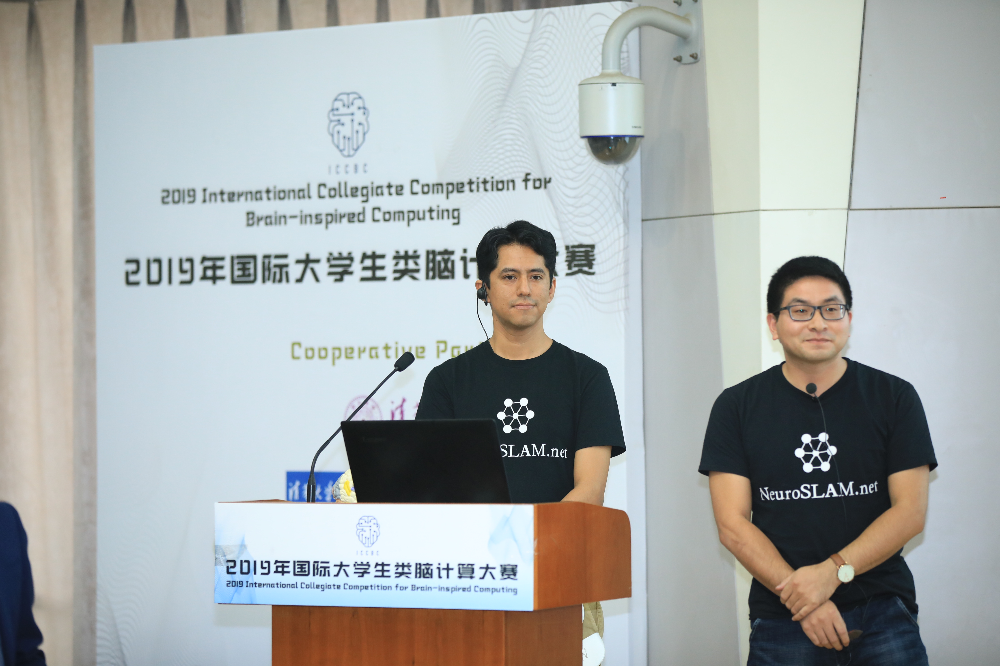
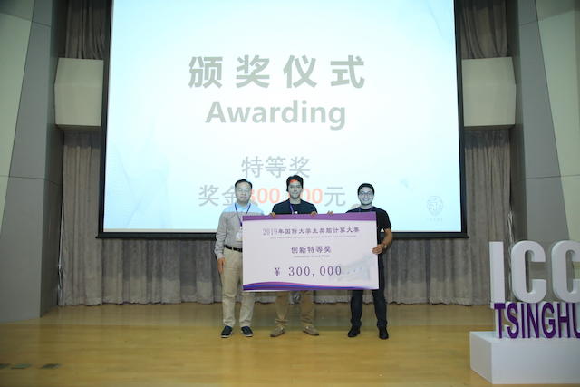

Marvin ChancánRobotics Ph.D. candidateSchoool of Electrical Engineering and Robotics, QUT Email: mchancanl@uni.peLast updated: Jan 2020 |
|
|  |
CityLearn: Diverse Real-World Environments for Sample-Efficient Navigation Policy Learning Marvin Chancán, Michael Milford IEEE International Conference on Robotics and Automation (ICRA), 2020 [Project page] [arXiv] [Video] |
|  | A Hybrid Compact Neural Architecture for Visual Place Recognition Marvin Chancán, Luis Hernandez-Nunez, Ajay Narendra, Andrew B. Barron, Michael Milford IEEE Robotics and Automation Letters (RA-L), 2020 (Oral presentation at ICRA 2020) [Project page] [arXiv] [IEEE Xplore®] |
|  |
NeuroSLAM: A Brain Inspired SLAM System for 3D Environments F. Yu, M. Chancán, J. Shang, Y. Hu, M. Milford 2019 International Collegiate Competition for Brain-inspired Computing (ICCBC), Tsinghua University, Beijing, China [Poster] [Project page] |
| Top ¥ 300,000 Innovation Grant Prize at ICCBC, Tsinghua University, 2019 President of the Republic (Peru) Scholarship, Ph.D. degree, 2018-2022 Huiracocha Scholarship, 2017 (declined) IPFE Scholarship, 2013 National Scholarship in Brazil, Master's degree, 2010-2012 First-class B.S. student (top 1 in Mechatronics Engineering School), 2005-2009 Academic Honors Diploma, for having the best performance in my B.S. class, 2008 |  |